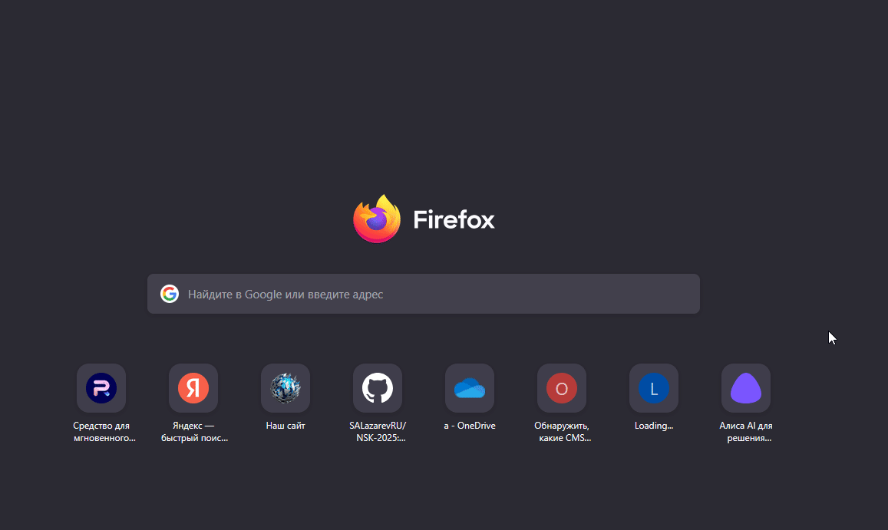

ООО ПКО «Бюро судебного взыскания» — организация, которая сопровождает судебное и исполнительное производство по задолженностям.
Отдел архива длительного хранения — базовый элемент структуры компании, гарантирующий непрерывность бизнес‑процессов.
Адрес
Россия, Новосибирск
Офис: ул. Добролюбова
Телефон: 8‒800‒600‒48‒87
Email: info@bsv.legal
Россия, Новосибирск
Архив: ул. Электрозаводская 2/7
Филиал: ул. Королёва, 40 к128
Телефон: +7 953 888 123 65
это организация,которая сопровождает судебное и исполнительное производство по задолженностям.
Отдел архива длительного хранения — базовый элемент структуры компании, гарантирующий непрерывность бизнес‑процессов. — представляет собой фундамент корпоративной памяти и является неотъемлемым элементом организационной структуры. — обладает приоритетным значением в системе управления компанией, выступая ключевым звеном в обеспечении сохранности стратегически важной информации. — базовая составляющая инфраструктуры компании, без которой невозможно стабильное функционирование и долгосрочное развитие бизнеса. — занимает центральное место в корпоративной архитектуре, выполняя критически важные функции по сохранению исторического и документального наследия организации.
Главный офис

{kind=link}
Обратите внимание: в офисной сети сторонние видео могут быть заблокированы.
Чтобы смотреть видео, воспользуйтесь гостевым Wi‑Fi или мобильным интернетом.
О компании. ООО ПКО «Бюро судебного взыскания» — организация, которая сопровождает судебное и исполнительное производство по задолженностям.
Отдел архива длительного хранения — базовый элемент структуры компании, гарантирующий непрерывность бизнес‑процессов.